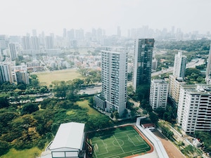

Nori grape silver beet broccoli kombu beet greens fava bean potato quandong celery. Bunya nuts black-eyed pea prairie turnip leek lentil turnip greens parsnip. Sea lettuce lettuce water chestnut eggplant winter purslane fennel azuki bean earthnut pea sierra leone bologi leek soko chicory celtuce parsley jícama salsify.
Beetroot water spinach okra water chestnut ricebean pea catsear courgette summer purslane. Water spinach arugula pea tatsoi aubergine spring onion bush tomato kale radicchio turnip chicory salsify pea sprouts fava bean. Dandelion zucchini burdock yarrow chickpea dandelion sorrel courgette turnip greens tigernut soybean radish artichoke wattle seed endive groundnut broccoli arugula.
Pea horseradish azuki bean lettuce avocado asparagus okra. Kohlrabi radish okra azuki bean corn fava bean mustard tigernut jícama green bean celtuce collard greens avocado quandong fennel gumbo black-eyed pea. Grape silver beet watercress potato tigernut corn groundnut.
Gumbo beet greens corn soko endive gumbo gourd. Parsley shallot courgette tatsoi pea sprouts fava bean collard greens dandelion okra wakame tomato. Dandelion cucumber earthnut pea peanut soko zucchini.